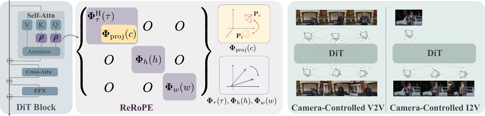
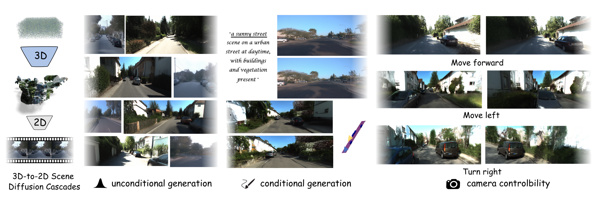
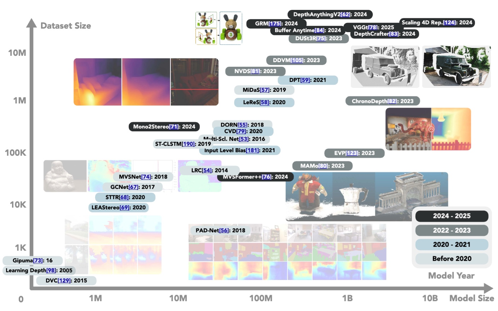

Research


Towards Depth Foundation Model: Recent Trends in Vision-Based Depth Estimation
Computational Visual Media, 2026


Ph.D, HKUST CSE
I am a Ph.D. student in Computer Science at HKUST, advised by Yinghao Xu. Previously I obtained my B.Eng. in Automation from Zhejiang University, where I worked with Yiyi Liao at X-D Lab.
My research aims to build a general-purpose agent that can understand, simulate, and act in the physical world — at the intersection of multimodal learning, generative modeling, and embodied AI.



Computational Visual Media, 2026
A monorepo of personal Claude Code skills covering research, productivity, and remote cluster workflows.